Recorridos · Prologo_UltimaNoche
Cada personaje con su color; un punto cada 2 s (con el segundo cada 10 s); los conos son las cámaras con su número de plano.
1. @inicio · 0:00,0 – 0:19,0
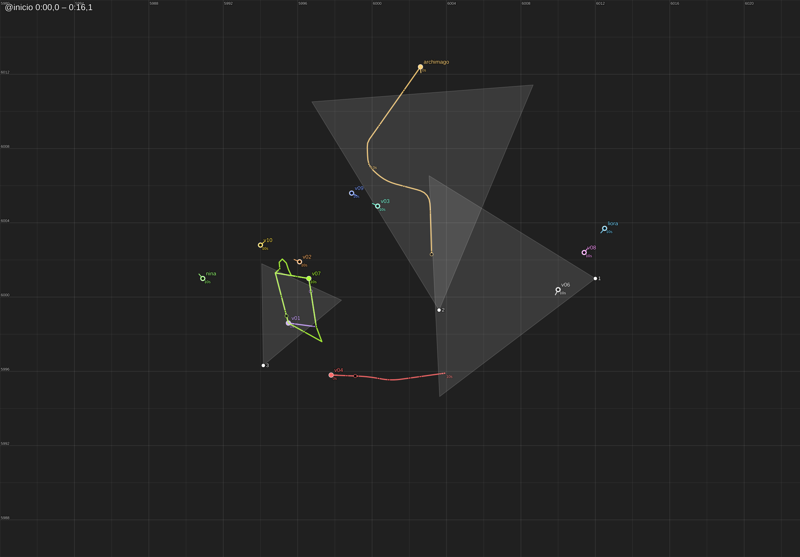
2. @saludo · 0:19,0 – 0:37,3
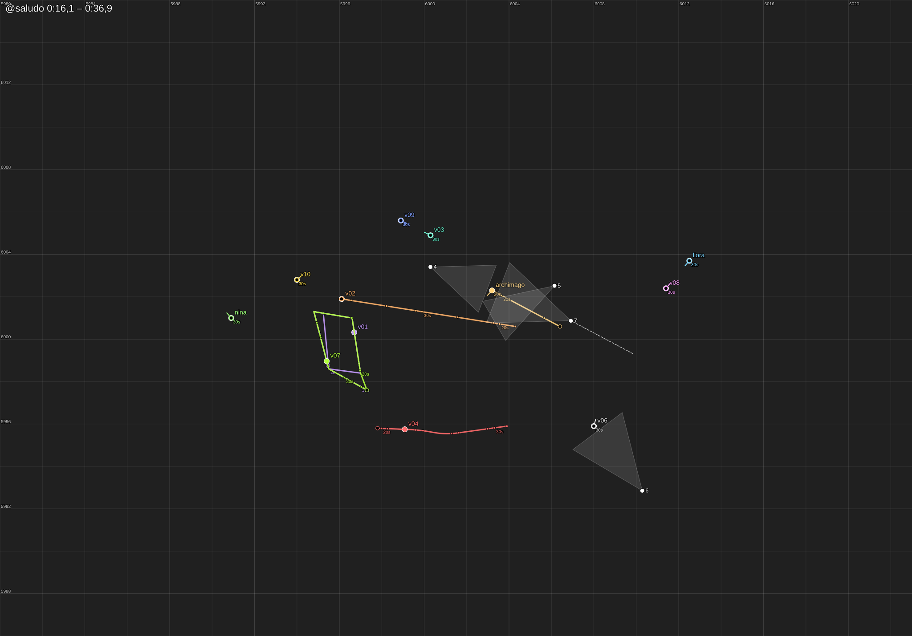
3. @carreta_magia · 0:37,3 – 0:51,8
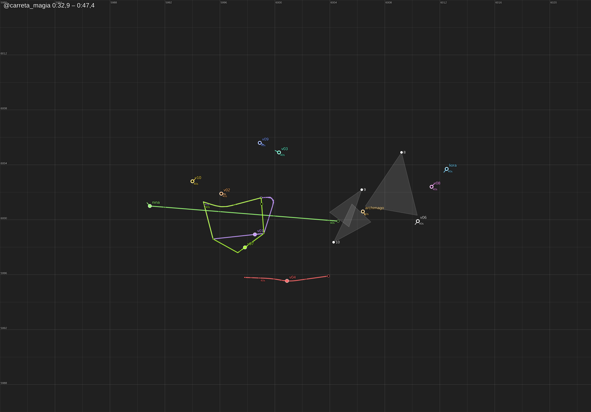
4. @globo_sube · 0:51,8 – 1:02,0
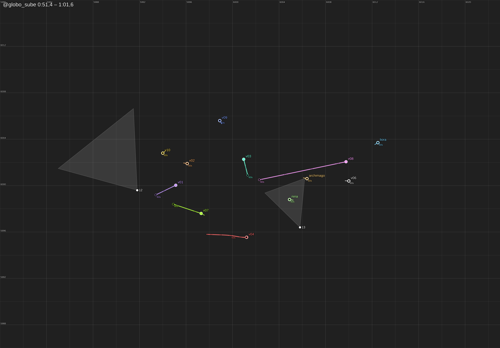
5. @globo_fin · 1:02,0 – 1:23,8
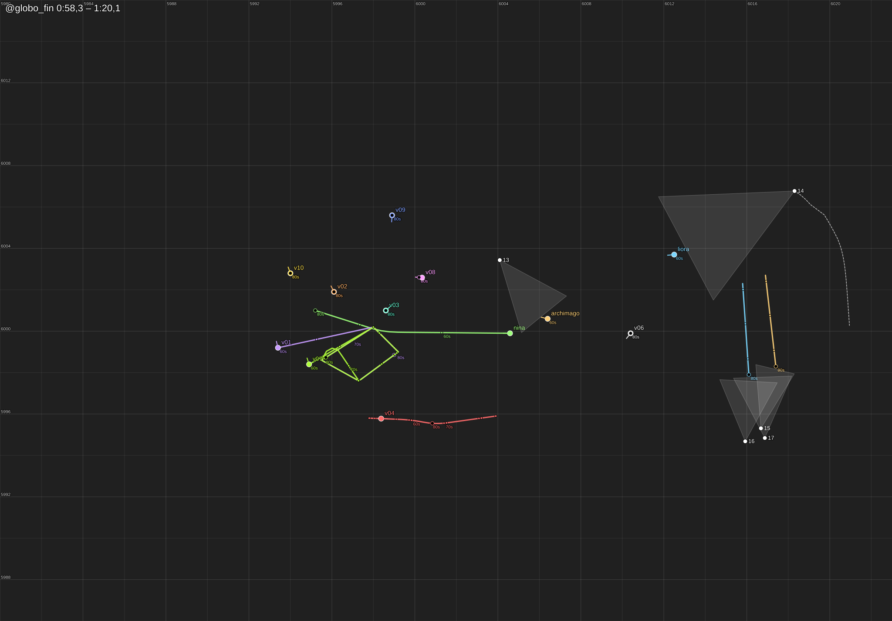
6. @cielo · 1:23,8 – 1:39,5
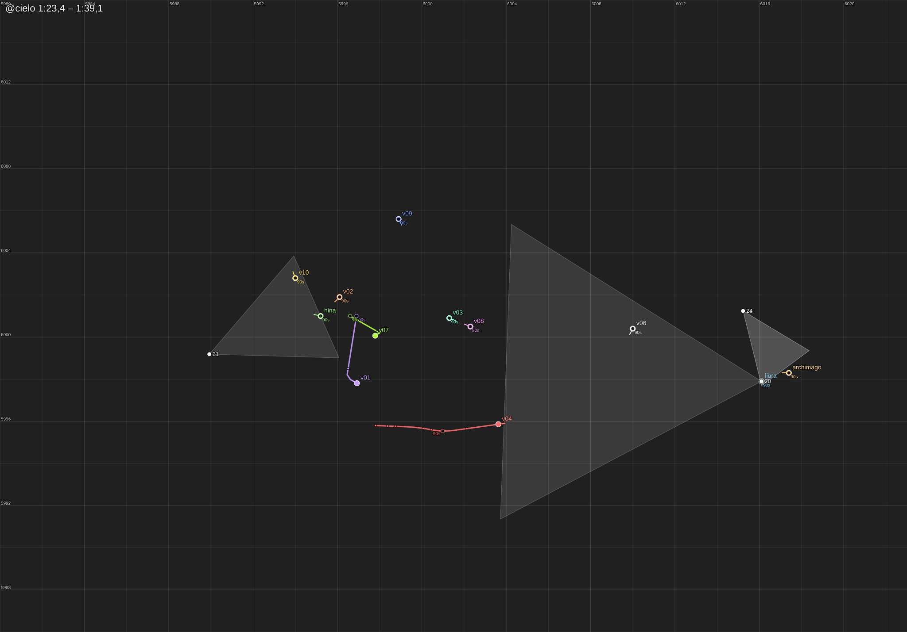
7. @evacuar · 1:39,5 – 2:08,4
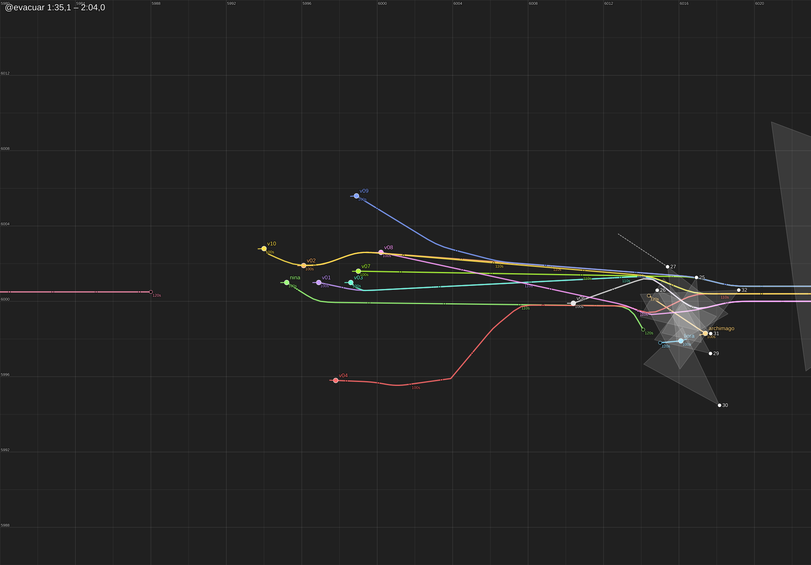
8. @acercan · 2:08,4 – 2:19,9
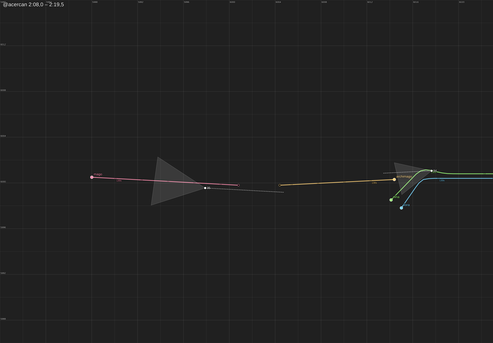
9. @duelo · 2:19,9 – 2:34,7
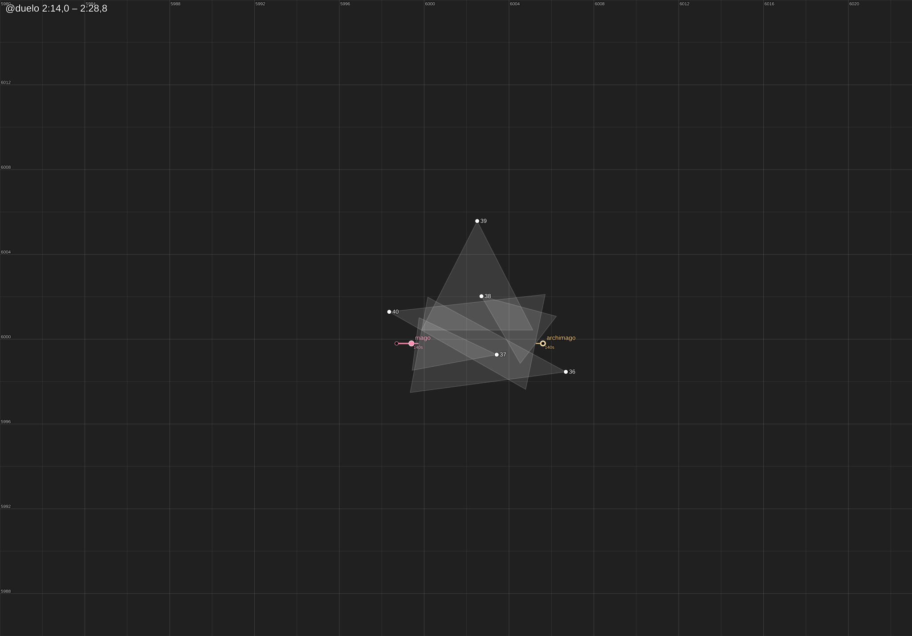
10. @choque · 2:34,7 – 3:34,1
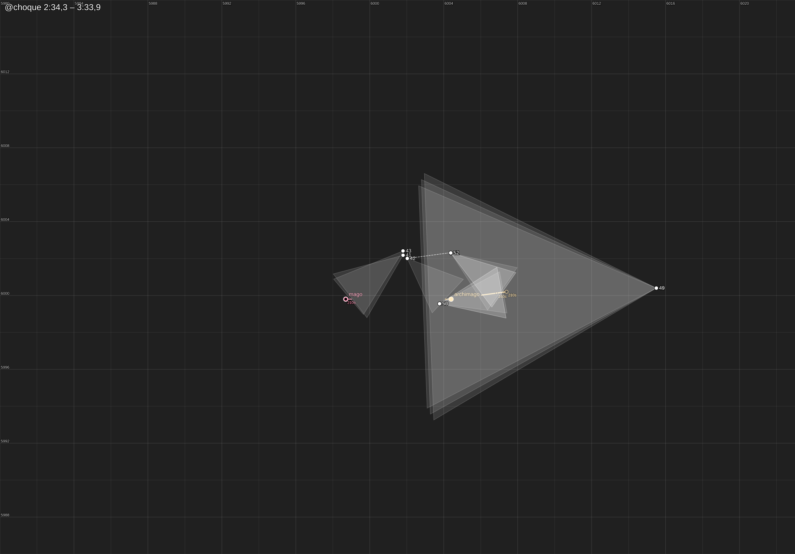
11. @hechizo · 3:34,1 – 3:42,9
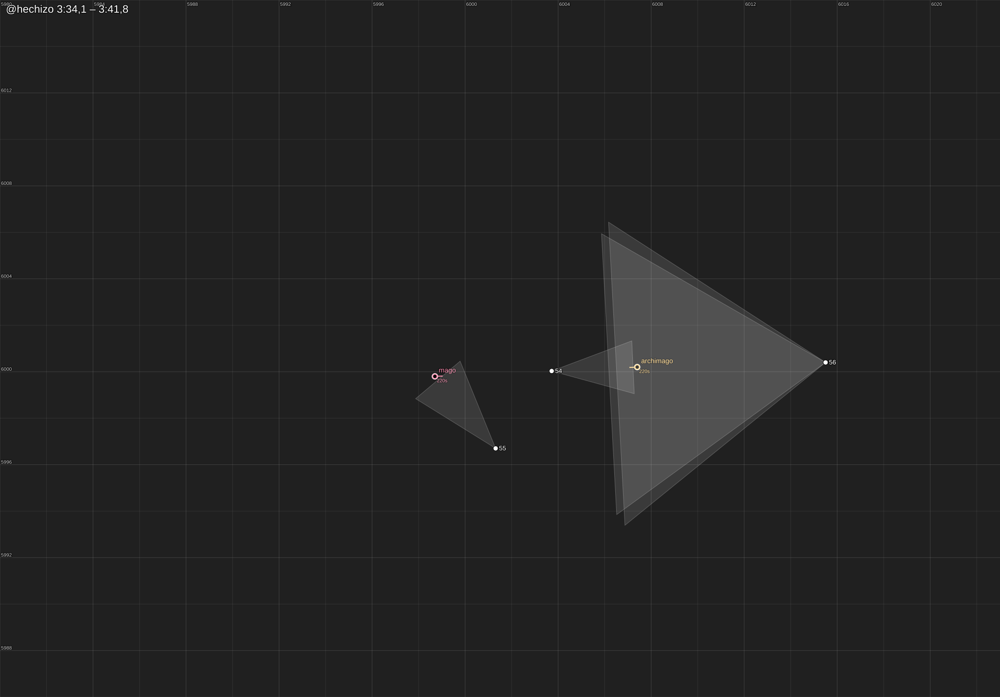